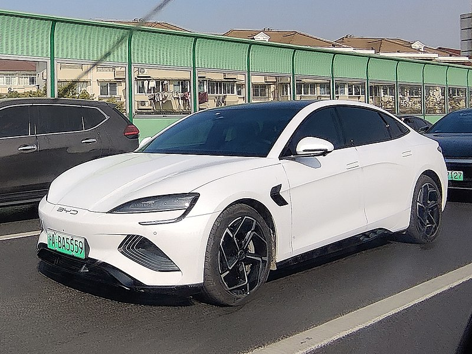

Seal
компактный представительский электромобиль китайской компании BYD. На
внутренних рынках продаётся под названием BYD Atto 4.

Song
компактный кроссовер китайской компании BYD, серийно выпускаемый с
2015 года. Конкурентом является Luxgen U6.
Han
выпускаемый с 2020 года седан китайского автопроизводителя BYD,
доступен как электромобиль и как «гибрид».
Destroyer 05
компактный автомобиль китайской компании BYD. Является первым
гибридным автомобилем компании.
Atto 3
компактный электромобиль-кроссовер китайской компании BYD. Является
преемником BYD Yuan и был представлен в Китае в феврале 2022 года.
Leopard 05
гибридный среднеразмерный внедорожник, выпускающийся с ноября 2023
года китайской компанией BYD Auto под брендом Fangchengbao. Является
первой моделью бренда Fangchengbao.

Yangwang U9
гибридный гиперкар, производимый китайской компанией BYD Auto под
брендом Yangwang с 2023 года.

F6
переднеприводной среднеразмерный седан китайской компании BYD.